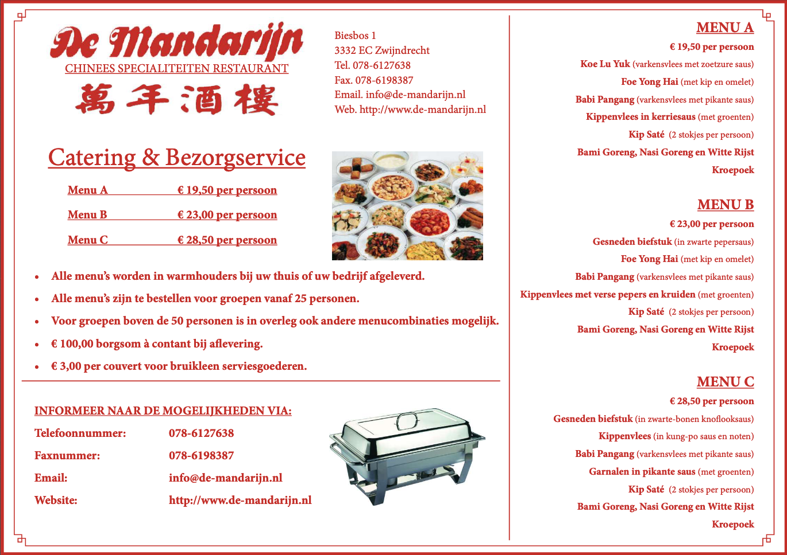

Catering Zwijndrecht
Geeft u een feestje of heeft u op de zaak iets te vieren?
De Mandarijn kan al uw catering wensen invulling geven, om zo elke partij tot een geslaagd evenement te maken. Onze catering bieden we aan in Zwijndrecht en omstreken. Heeft u wensen of wilt u een prijsopgaaf voor catering in Zwijndrecht of daarbuiten?
Neem gerust contact met ons op, we denken graag met u mee. Chinees catering is met de Mandarijn altijd een culinair feest!